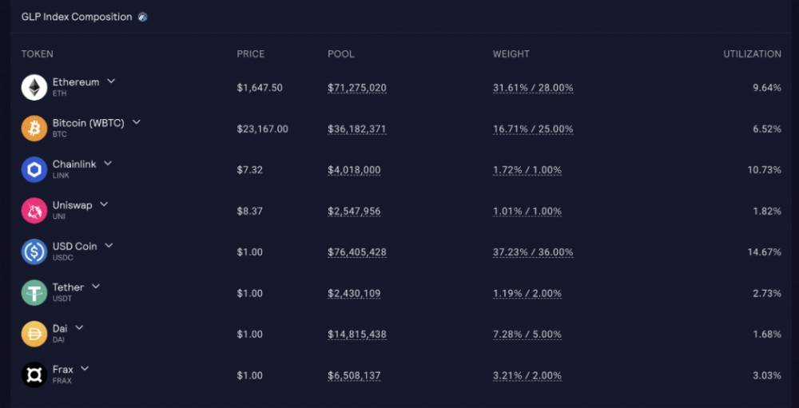
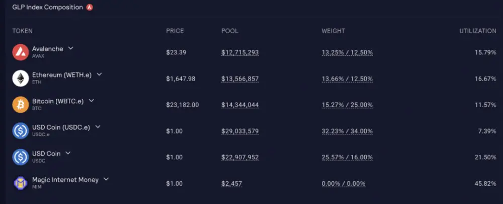
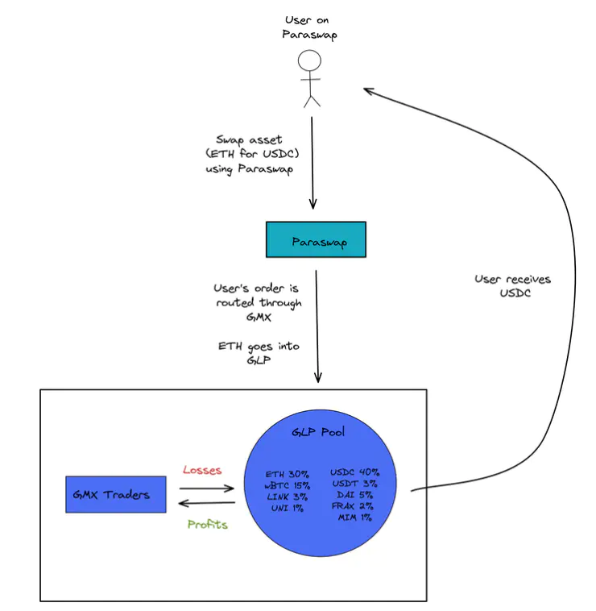

GMX 深度解析：去中心化衍生品交易平台
GMX 深度解析：去中心化衍生品交易平台
引言
GMX 是一个去中心化的永续合约和现货交易平台，支持低滑点的杠杆交易。其独特之处在于采用了 GLP 流动性池作为交易者的对手方，并通过预言机价格执行交易。本文将深入解析 GMX 的机制、GLP 的作用、流动性来源、与 Synthetix（SNX）的比较，以及其在 DeFi 生态系统中的优势和应用场景。
一、GMX 概述
1. 什么是 GMX？
GMX 是一个建立在以太坊二层网络 Arbitrum 和 Avalanche 上的去中心化交易平台，支持多种主流加密资产的杠杆交易。其主要特点包括：
- 无滑点交易：通过预言机价格执行，避免了传统 AMM 模型中的价格滑点。
- 高效杠杆交易：支持高达 30 倍的杠杆交易，满足高频交易者的需求。
- GLP 流动性池：GLP 持有人作为交易者的对手方，承担交易盈亏。
二、GLP 流动性池作为交易者的对手方
1. 交易者与 GLP 的关系
在 GMX 平台上，GLP 流动性池 充当交易者的对手方。这意味着：
- 当交易者盈利时，GLP 持有人承担损失。
- 当交易者亏损时，GLP 持有人获得收益。
2. 杠杆交易举例
- 开多单（做多）：
- 交易者存入 1 ETH 作为保证金，开立 10 倍杠杆 的多头头寸。
- 相当于从 GLP 池中借入 10 ETH 的多头敞口。
- 开空单（做空）：
- 交易者存入 1 ETH，开立 10 倍杠杆 的空头头寸。
- 相当于从 GLP 池中借入等值于 10 ETH 的 USDC，押注 ETH 价格下跌。
3. 交易执行机制
- 预言机价格执行：交易直接按预言机（Chainlink）提供的价格成交，避免了滑点和前置交易（Front-running）的问题。
- 价格发现功能缺失：由于交易价格不在平台上形成，GMX 不具备价格发现的功能，这也是其与传统交易所的区别。
4. 优势与挑战
- 优势：
- 快速上手：无需依赖交易量进行价格发现，更快地吸引用户。
- 低滑点：高杠杆、高频交易对流动性和成交速度要求高，GMX 的机制满足了这一需求。
- 挑战：
- 价格发现依赖外部预言机：可能面临预言机价格更新不及时或被操纵的风险。
三、流动性来源与 GLP 代币
1. 流动性来源
- 资产存入：用户可以将 稳定币（USDC、USDT、DAI） 和主流加密资产（ETH、BTC 等）存入 GMX 的流动性池。
- 铸造 GLP：存入的资产被用于铸造 GLP（指数型流动性代币）。
2. GLP 代币
- 组成：GLP 是由一篮子不同比例的资产构成的指数型代币，代表了整个 GMX 平台的资产管理规模（AUM）和资金池流动性。
- 资产组成：
- Arbitrum 上：ETH、WBTC、USDC、USDT、DAI 等。 
- Avalanche 上：AVAX、ETH、BTC.b、USDC.e、USDC 等。 
- 资产权重：
- 系统设定了每种资产的目标权重和当前权重，通过手续费机制来平衡。
3. GLP 与 GMX 的区别
- GLP（流动性代币）：
- 作用：为平台提供流动性，作为交易者的对手方。
- 收益来源：获得平台 70% 的交易手续费，以及交易者亏损带来的收益。
- 价格波动：GLP 的价值会根据池中资产价格和交易者盈亏而波动。
- GMX（治理代币）：
- 作用：平台的治理代币，持有人可以参与治理决策。
- 收益来源：获得平台 30% 的交易手续费，以及质押挖矿奖励。
- 质押率高：约 80% 的 GMX 被质押，获得更多收益。
四、GLP 的激励机制与手续费模型
1. 激励用户提供流动性
- 收益奖励：GLP 持有人可获得平台 70% 的交易手续费，以 ETH 或 AVAX 的形式发放。
- 手续费机制：
- 资产权重调整：每种资产有目标权重和当前权重，如 ETH 的目标权重为 28%，当前权重为 31.61%。
- 手续费动态调整：
- 当前权重 > 目标权重：使用该资产铸造 GLP 的手续费增加，鼓励用户减少该资产的存入。
- 当前权重 < 目标权重：使用该资产铸造 GLP 的手续费降低，鼓励用户增加该资产的存入。
2. GLP 的 Mint/Burn
- 铸造 GLP（Mint）：
- 用户可以使用 GLP 指数资产中的任何一种资产，无滑点地铸造 GLP。
- 手续费根据资产的当前权重和目标权重动态调整。
- 销毁 GLP（Burn）：
- 用户可以无滑点地将 GLP 兑换为指数资产中的任意一种。
- 手续费同样根据权重关系动态调整。
3. 手续费的作用
- 平衡资产比例：通过手续费机制，保持 GLP 中各资产的比例接近目标权重。
- 吸引流动性：手续费优势吸引用户参与流动性提供，提升资金池规模。
五、GMX 的质押奖励与通胀控制
1. GMX 质押奖励
- 直接奖励：质押 GMX 可直接获得 ETH 或 AVAX 奖励，来源于平台的交易手续费。
- esGMX 奖励：质押者还可获得 esGMX（可延期释放的 GMX 代币），一年线性释放，鼓励长期持有。
- 奖励乘数：根据质押时间，质押者可获得奖励乘数，进一步增加收益。
2. 减少抛售压力的措施
- 延迟释放：esGMX 的释放需要一定时间，防止短期内大量抛售。
- 质押激励：通过高额的质押奖励，鼓励持有人长期持有 GMX，稳定代币价格。
六、GMX 机制相对于 Synthetix 的优势

1. 资产基础的差异
- Synthetix（SNX）：
- 采用全局债务模型，质押者铸造合成资产（Synths），但面临债务波动和 SNX 价格波动的风险。
- GMX：
- 使用具有公允价值的主流资产作为流动性池的组成部分，降低了系统风险。
- GLP 持有者的盈亏与交易者的表现相关，但由于资产多元化，风险被分散。
2. 流动性吸引方式
- 手续费机制：
- 通过目标权重和当前权重的偏差，调整铸造和销毁 GLP 的手续费，激励用户维持资产比例。
- 吸引聚合器（如 1inch、Paraswap）将 GMX 作为大额兑换的路径，提高平台流动性。
七、GMX 的应用场景与优势
1. 无滑点现货交易
- GLP 作为媒介：利用 GLP，无滑点地进行现货交易，适合大额交易。
- 预言机价格执行：交易价格基于预言机，避免了滑点和深度不足的问题。
2. 聚合器的交易路径
- 大额兑换入口：聚合器（如 1inch、Yak、Paraswap）将 GMX 纳入交易路径，为用户提供更好的兑换价格。
- 提高平台曝光度：增加了 GMX 的交易量和知名度。
3. DAO 的资产管理
- 代币质押：DAO 可以购买 GLP 或 GMX 进行质押，获得稳定的收益。
- 风险对冲：GLP 由多种资产组成，适合作为资产配置的一部分。
八、风险与挑战
1. 预言机风险
- 价格更新延迟：预言机价格可能存在更新延迟，导致交易价格偏离市场。
- 价格操纵风险：虽然使用 Chainlink 等预言机，但仍需防范价格操纵的可能性。
2. 交易者与 GLP 持有者的对立
- 盈亏对立：交易者的盈利意味着 GLP 持有者的损失，反之亦然。
- 极端行情风险：在极端市场条件下，可能出现交易者大幅盈利或亏损，影响 GLP 持有者的收益。
3. 流动性风险
- 资产价格波动：GLP 由多种资产组成，其价值会随着市场波动而变化。
- 资产比例失衡：如果某种资产比例过高，可能影响 GLP 的稳定性。
九、结论
GMX 通过创新的机制，利用 GLP 流动性池作为交易者的对手方，实现了无滑点的杠杆交易和现货兑换。其独特的手续费模型和激励机制，成功地吸引了大量用户提供流动性，增强了平台的竞争力。相比于传统的衍生品平台和其他去中心化协议，GMX 在资金效率、交易体验和风险控制方面都有所提升。
然而，作为一个新兴的 DeFi 项目，GMX 仍需关注预言机风险、市场极端波动带来的挑战，以及持续完善其机制以适应快速变化的加密市场环境。对于投资者和用户，深入了解 GMX 的工作原理、风险和收益，是参与其中的关键。
参考资料
GMX 深度解析：去中心化衍生品交易平台
http://navafee.github.io./gmx/